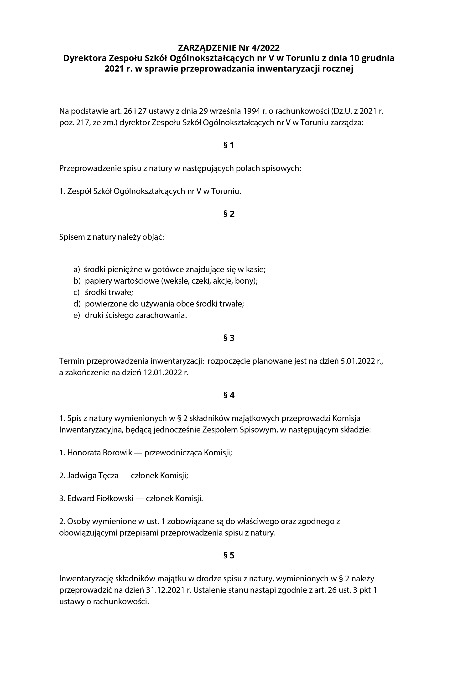
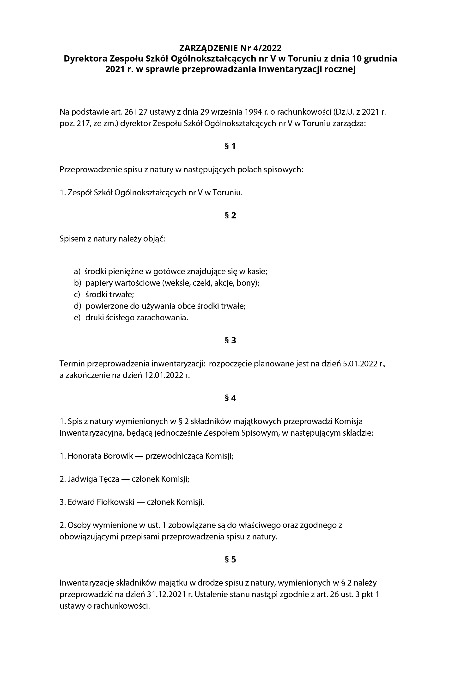

JEDNOLITY RZECZOWY WYKAZ AKT
0 ZARZĄDZANIE
00 Gremia kolegialne
000 Rada Szkoły – A
001 Rada Pedagogiczna (protokoły i uchwały)– A
002 Samorząd uczniowski – A
003 Własne komisje i zespoły (stałe i doraźne) – A
004 Udział w obcych gremiach kolegialnych – A
005 Narady (zebrania) pracowników – A
01 Organizacja
010 Organizacja organów i jednostek nadrzędnych – A
011 Organizacja własnej jednostki
012 Pełnomocnictwa, upoważnienia, wzory podpisów i podpisy elektroniczne – B10
013 System zarządzania jakością – A
014 Ochrona i udostępnianie informacji ustawowo chronionych oraz informacji publicznej
0140 Wyjaśnienia, interpretacje, opinie oraz akty prawne dotyczące zagadnień z zakresu ochrony i udostępniania informacji ustawowo chronionych oraz informacji publicznej - B10
0141 Ochrona informacji niejawnych – B10
0142 Ochrona danych osobowych – B10
0143 Udostępnianie informacji – B10
015 Obsługa kancelaryjna
0150 Przepisy kancelaryjne i archiwalne oraz wyjaśnienia i poradnictwo – A
0151 Środki do rejestrowania i kontroli obiegu dokumentacji – B5
0152 Opracowanie oraz wdrażanie wzorów formularzy oraz ich wykazy – A
0153 Ewidencja druków ścisłego zarachowania – B10
0154 Ewidencja pieczęci i pieczątek oraz ich wzory odciskowe – A
0155 Prenumerata czasopism i innych publikacji – B5
0156 Przekazywanie dokumentacji w związku ze zmianami organizacyjnymi i kompetencyjnymi – A
016 Składnica akt
0160 Ewidencja dokumentacji przechowywanej w składnicy akt – A
0161 Przekazywanie dokumentacji do archiwum państwowego – A
0162 Brakowanie dokumentacji niearchiwalnej – A
0163 Udostępnianie i wypożyczanie dokumentacji w składnicy akt – B5
0164 Profilaktyka i konserwacja dokumentacji w archiwum – B10
017 Zbiory biblioteczne
0170 Wyjaśnienia, interpretacje, opinie do regulacji, instrukcje w sprawach obsługi zbiorów bibliotecznych – B10
0171 Ewidencja zbiorów bibliotecznych – A
0172 Gromadzenie zbiorów bibliotecznych – A
0173 Udostępnianie zbiorów bibliotecznych i informacje o zbiorach biblioteki
02 Zbiory aktów normatywnych, legislacja i obsługa prawna
020 Zbiór aktów normatywnych władz i organów nadrzędnych i innych – B10
021 Zbiór aktów normatywnych własnej jednostki – A
022 Zbiór umów – B10
023 Udział w przygotowywaniu projektów aktów prawnych – A
024 Interpretacje i opinie prawne na potrzeby własnej jednostki – B10
025 Sprawy sądowe i sprawy w postępowaniu administracyjnym
0250 Sprawy przed sądami powszechnymi i Sądem Najwyższym – B10
0251 Sprawy przed sądami administracyjnymi – B10
03 Strategie, programy, planowanie, sprawozdawczość i analizy
030 Wyjaśnienia, interpretacje, opinie oraz akty prawne dotyczące sposobu opracowania strategii, programów, planów, sprawozdań i analiz – B10
031 Strategie, programy, plany i sprawozdania z innych podmiotów – B5
032 Strategie, programy, plany i sprawozdania własnej jednostki – A
033 Sprawozdawczość statystyczna – A
034 Analizy tematyczne lub przekrojowe, ankietyzacja – A
035 Informacje o charakterze analitycznym i sprawozdawczym dla innych podmiotów – A
04 Informatyzacja
040 Wyjaśnienia, interpretacje, opinie oraz akty prawne dotyczące zagadnień z zakresu informatyzacji – B10
041 Projektowanie, wdrażanie systemów teleinformatycznych – B10
042 Licencje na oprogramowanie i systemy teleinformatyczne – B5
043 Eksploatacja systemów teleinformatycznych i oprogramowania – B5
044 Ustalanie uprawnień dostępu do danych i systemów – B5
045 Projektowanie i eksploatacja stron internetowych
046 Bezpieczeństwo systemów teleinformatycznych
05 Skargi, wnioski, petycje, postulaty, inicjatywy i interpelacje
050 Wyjaśnienia, interpretacje, opinie oraz akty prawne dotyczące skarg, wniosków, petycji, postulatów, inicjatyw i interpelacji – B10
051 Skargi i wnioski załatwiane bezpośrednio – A
052 Skargi i wnioski przekazywane do załatwienia według właściwości – B2
053 Petycje, postulaty i inicjatywy obywatelskie – A
054 Interpelacje i zapytania – A
055 Sprawy odesłane do załatwienia innym podmiotom – B2
06 Reprezentacja i promowanie
060 Wyjaśnienia, interpretacje, opinie oraz akty prawne w zakresie reprezentacji i promowania działalności – B10
061 Patronaty – A
062 Kontakty ze środkami publicznego przekazu
0620 Informacje własne dla środków publicznego przekazu, odpowiedzi na informacje medialne i konferencje i wywiady – A
0621 Monitoring środków publicznego przekazu – A
063 Promocja i reklama działalności własnej jednostki – A
064 Własne wydawnictwa oraz udział w obcych wydawnictwach – A
065 Zbiór zaproszeń, życzeń, podziękowań, kondolencji – B5
066 Badanie satysfakcji klienta – B10
07 Współdziałanie z innymi podmiotami
070 Wyjaśnienia, interpretacje, opinie oraz akty prawne dotyczące współdziałania z innymi podmiotami – B10
071 Kontakty z podmiotami na gruncie krajowym – A
072 Kontakty z podmiotami zagranicznymi
0720 Kontakty i zakres współdziałania z podmiotami zagranicznymi – A
0721 Wyjazdy zagraniczne przedstawicieli własnej jednostki – B10
0722 Przyjmowanie przedstawicieli i gości z zagranicy – B10
073 Konferencje, zjazdy, sympozja, sesje, fora krajowe i zagraniczne – A
08 Programy i projekty współfinansowane ze środków zewnętrznych, w tym Unii Europejskiej – B10
09 Kontrole i audyt
090 Wyjaśnienia, interpretacje, opinie oraz akty prawne dotyczące zagadnień z zakresu kontroli, audytu – B10
091 Kontrole
0910 Kontrole zewnętrzne we własnej jednostce – A
0911 Kontrole wewnętrzne we własnej jednostce – A
0912 Książka kontroli – B5
0913 Udział przedstawicieli jednostki w kontrolach przeprowadzanych przez inne podmioty – B5
092 Audyt
1 SPRAWY KADROWE
10 Regulacje oraz wyjaśnienia, interpretacje, opinie, akty prawne dotyczące zagadnień z zakresu spraw kadrowych
100 Własne regulacje, ich projekty oraz wyjaśnienia, interpretacje, opinie, akty prawne dotyczące zagadnień z zakresu spraw kadrowych – A
101 Otrzymane od organów i jednostek zewnętrznych regulacje, ich projekty oraz wyjaśnienia, interpretacje, opinie, akty prawne dotyczące zagadnień z zakresu spraw kadrowych – B10
102 Opisy i wartościowanie stanowisk pracy – B10
103 Restrukturyzacja zatrudnienia – A
104 Kontakty i wymiana informacji ze związkami zawodowymi w sprawach kadrowych – A
11 Nawiązywanie, przebieg i rozwiązywanie stosunku pracy oraz innych form zatrudnienia
110 Zapotrzebowanie i nabór kandydatów do pracy – B10
111 Konkursy na stanowiska – B5
112 Obsługa zatrudnienia
1120 Obsługa zatrudnienia kierownika jednostki – B10
1121 Obsługa zatrudnienia pracowników – B10
1122 Rozmieszczanie i wynagradzanie pracowników – B10
1123 Oświadczenia lustracyjne, majątkowe lub inne – B6
1124 Opiniowanie i ocenianie osób zatrudnionych – B10
113 Staże zawodowe, wolontariat, praktyki – B10
114 Prace zlecone (umowy cywilnoprawne)
1140 Prace zlecone ze składką na ubezpieczenie społeczne – B10
1141 Prace zlecone bez składki na ubezpieczenie społeczne – B5
115 Nagradzanie, odznaczanie i karanie
1150 Nagrody - B10
1151 Odznaczenia państwowe, samorządowe i inne – B10
1152 Wyróżnienia – B10
1153 Karanie – B (okres przechowywania zależy od obowiązujących przepisów prawa)
1154 Postępowanie dyscyplinarne – B (okres przechowywania zależy od obowiązujących przepisów prawa)
116 Sprawy wojskowe osób zatrudnionych – B10
117 Dostęp do informacji chronionych przepisami prawa – B10
118 Sprawy osobowe niezwiązane z zatrudnieniem – B5
12 Dokumentacja pracownicza
120 Akta osobowe zatrudnionych po 01.01.1999 r. – B10
121 Dokumentacja w sprawach związanych ze stosunkiem pracy – B10
122 Pomoce ewidencyjne do dokumentacji pracowniczej – B10
123 Legitymacje służbowe – B5
124 Zaświadczenia o zatrudnieniu i wynagrodzeniu – B2
125 Obsługa sposobu prowadzenia i przechowywania akt osobowych B10
13 Bezpieczeństwo i higiena pracy
130 Przeglądy warunków i bezpieczeństwa pracy – A
131 Działania w zakresie zwalczania wypadków, chorób zawodowych, ryzyka pracy – A
132 Wypadki przy pracy oraz w drodze do pracy i z pracy – B10
133 Warunki szkodliwe i choroby zawodowe
1330 Warunki szkodliwe – B10
1331 Rejestr czynników szkodliwych – B40
1332 Choroby zawodowe – B10
134 Przeciwdziałanie mobbingowi i dyskryminacji – B10
14 Szkolenie i doskonalenie zawodowe osób zatrudnionych
140 Własne regulacje i programy szkolenia oraz doskonalenia – A
141 Szkolenia organizowane we własnym zakresie – B10
142 Dokształcanie pracowników B10
15 Dyscyplina pracy
150 Czas pracy
1500 Dowody obecności w pracy – B10
1501 Absencje w pracy – B10
1502 Rozliczenia czasu pracy – B10
1503 Delegacje służbowe – B3
1504 Ustalanie i zmiany czasu pracy – B10
1505 Praca w godzinach nadliczbowych – B10
151 Urlopy osób zatrudnionych
1510 Urlopy wypoczynkowe – B5
1511 Urlopy macierzyńskie, ojcowskie, wychowawcze, dla poratowania zdrowia itp. – B10
1512 Urlopy bezpłatne – B10
152 Dodatkowe zatrudnienie osób zatrudnionych – B10
16 Działalność socjalna – B5
17 Ubezpieczenia osobowe i opieka zdrowotna
170 Zgłoszenia do ubezpieczenia społecznego – B10
171 Obsługa ubezpieczenia społecznego – B5
172 Dowody uprawnień do zasiłków – B5
173 Emerytury i renty – B10
174 Ubezpieczenia zbiorowe, pracownicze, itp. – B10
175 Opieka zdrowotna
1750 Organizowanie i obsługa opieki zdrowotnej
1751 Badania lekarskie w zakresie medycyny pracy – B10
176 Pracownicze Plany Kapitałowe – B10
18 Zapewnienia dostępności osobom ze szczególnymi potrzebami – B10
2 ŚRODKI RZECZOWE
20 Regulacje oraz wyjaśnienia, interpretacje, opinie, akty prawne dotyczące zagadnień z zakresu spraw administracyjnych - B10
21 Inwestycje i remonty – B5
22 Administrowanie i eksploatowanie obiektów
220 Stan prawny nieruchomości – A
221 Udostępnianie i oddawanie w najem lub w dzierżawę własnych obiektów i lokali oraz najmowanie lokali na potrzeby własne – B5
222 Konserwacja i eksploatacja bieżąca budynków, lokali i pomieszczeń – B5
223 Podatki i opłaty publiczne – B10
224 Gospodarowanie terenami wokół obiektów – B5
23 Gospodarka materiałowa
230 Zaopatrzenie w sprzęt, materiały i pomoce biurowe – B5
231 Magazynowanie i użytkowanie środków trwałych i nietrwałych – B5
232 Ewidencja środków trwałych i nietrwałych – B10
233 Eksploatacja i likwidacja środków trwałych i przedmiotów nietrwałych – B10
234 Dokumentacja technicznoeksploatacyjna środków trwałych - B5
235 Gospodarka odpadami i surowcami wtórnymi – B5
24 Transport, łączność, infrastruktura informatyczna i telekomunikacyjna
240 Zakupy środków i usług transportowych, łączności, pocztowych i kurierskich – B5
241 Eksploatacja własnych środków transportowych – B5
242 Użytkowanie obcych środków transportowych – B5
243 Eksploatacja środków łączności – B5
244 Organizacja i eksploatacja infrastruktury informatycznej i telekomunikacyjnej – B10
25 ochrona obiektów i mienia oraz sprawy obronne
250 Strzeżenie mienia własnej jednostki – B10
251 Ubezpieczenia majątkowe – B10
252 Ochrona przeciwpożarowa – B10
253 Sprawy obronne – B10
254 Obrona cywilna – B10
255 Zarządzanie kryzysowe – B10
26 Zamówienia publiczne – B5
3 EKONOMIKA
30 Regulacje oraz wyjaśnienia, interpretacje, opinie, akty prawne dotyczące zagadnień z zakresu spraw finansowoksięgowych – B10
31 Planowanie i realizacja budżetu
310 Wieloletnia prognoza finansowa – A
311 Budżet i jego zmiany – A
312 Realizacja budżetu
3120 Przekazywanie środków finansowych – B5
3121 Rozliczanie dochodów, wydatków, opłat – B5
3122 Ewidencjonowanie dochodów, wykorzystania środków, opłat – B5
3123 Sprawozdania okresowe z wykonania budżetu – B10
3124 Sprawozdania roczne, bilans i analizy z wykonania budżetu – A
3125 Rewizja budżetu i jego bilansu – A
313 Finansowanie i kredytowanie
3130 Finansowanie działalności – B5
3131 Finansowanie inwestycji – B5
3132 Finansowanie remontów – B5
3133 Współpraca z bankami finansującymi i kredytującymi – B5
3134 Gospodarka pozabudżetowa – B5
314 Egzekucja i windykacja – B10
32 Rachunkowość, księgowość i obsługa kasowa
320 Obrót gotówkowy i bezgotówkowy
3200 Obrót gotówkowy – B5
3201 Obrót bezgotówkowy - B5
3202 Depozyty kasowe, obsługa wadium – B5
3210 Dowody księgowe – B5
321 Księgowość
3211 Dokumentacja księgowa – B5
3212 Rozliczenia – B5
3213 Ewidencja syntetyczna i analityczna – B5
3214 Uzgadnianie sald – B5
3215 Kontrole i rewizje kasy – B5
3216 Zobowiązania, poręczenia – B5
322 Księgowość materiałowotowarowa – B5
323 Rozliczenia płac i wynagrodzeń
3230 Dokumentacja płac i potrąceń z płac – B5
3231 Listy płac - B10
3232 Kartoteki wynagrodzeń - B10
3233 Deklaracje podatkowe i rozliczenia podatku dochodowego – B5
3234 Rozliczenia składek na ubezpieczenie społeczne – B10
3235 Dokumentacja wynagrodzeń z bezosobowego funduszu płac – B10
33 Obsługa finansowa funduszy i środków specjalnych – B10
34 Opłaty i ustalenie cen
340 Ustalanie i zwalnianie z opłat – B5
341 Ustalanie cen za własne wyroby – B5
35 Inwentaryzacja – B5
36 Dyscyplina finansowa – B10
Program EKA 03.3
Jaki to dokument?
 


Zaklasyfikuj zaprezentowany dokument (dobierz odpowiedni dla niego symbol klasyfikacyjny z )
Zakwalifikuj zaprezentowany dokument (dobierz właściwą dla niego kategorię archiwalną, pamiętając, że dokumenty przeznaczone do wieczystego przechowywania mają kategorię A, natomiast dokumenty podlegające zniszczeniu po upływie ustalonego okresu przechowywania otrzymują którąś z nw. kategorii: B2, B3, B5, B10, B50, Bc).
Zdecyduj jaką formę zapisu ma zaprezentowany dokument:
a) tekstową (rękopisy, maszynopisy, druki, pisma powielone)
b) graficzną (szkice, rysunki, schematy, wykresy, diagramy, plany, mapy, plansze, afisze itp.),
c) fotograficzną i filmową (obrazy utrwalone technikami fotograficznymi, polegającymi na naświetleniu materiału światłoczułego umieszczonego na płótnie, płytkach metalowych, szkle, błonie celuloidowej i papierze).